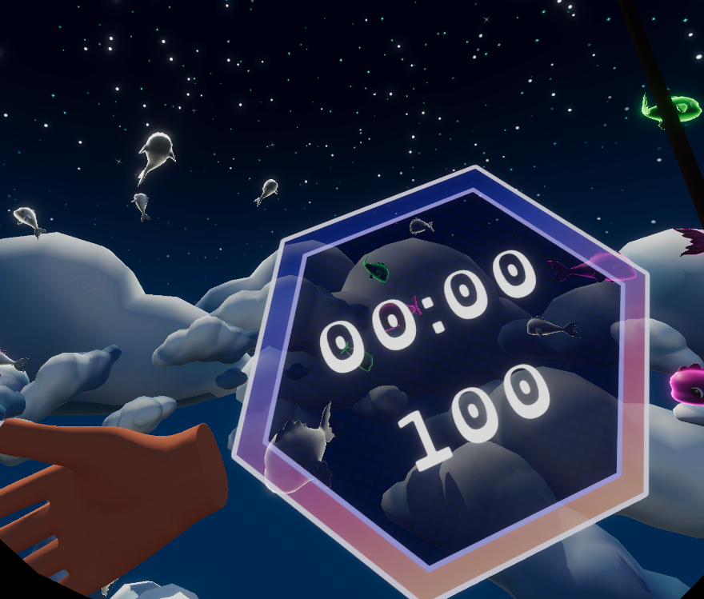
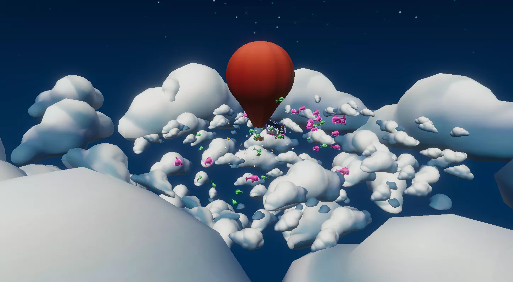
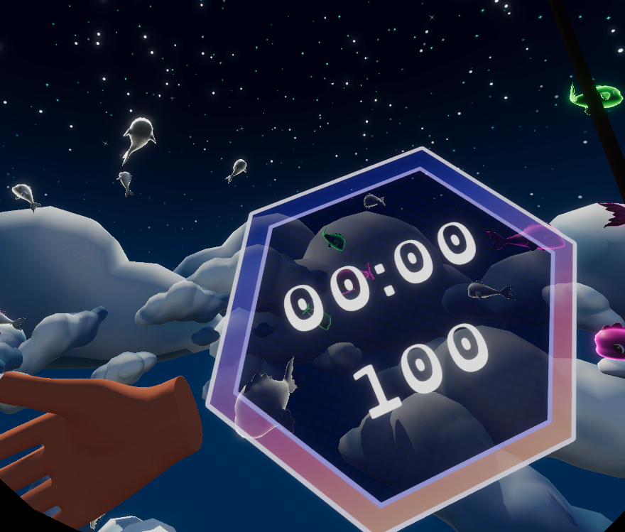
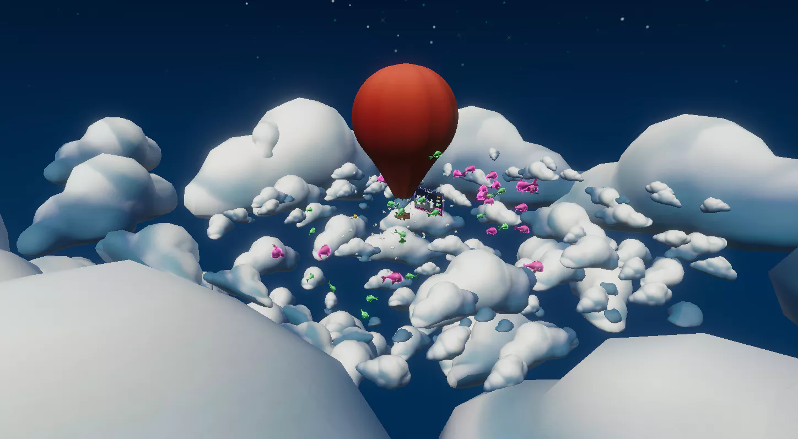

July 25, 2022
Fly-high Fishing was developed by a team of nine students over the course of 4 weeks.
This was for our Virtual and Extended Realities subject where we were required to produce a game together for the Oculus Quest 2.
One of the biggest challenges that we as a team had to overcome was limited access to the Oculus Quest 2.
Only two members had access to the VR headset, making it difficult to test and build as we had to wait for our schedules to line up.

The first thing I did was get started on the artificial intelligence for the fish. I used a boid system I had previously created in unity as the foundation to save time, tweaked it to better accommodate the project, and ensured all necessary values were either exposed or hidden to allow designers to fine-tune the AI if they so desired.
It didn't take me long to setup the AI with some place-holder cubes, they moved around the scene freely and in groups and would avoid the balloon and player.
Once I had set up the AI prototypes within our testing scenes, I moved on to handling the UI. This was the first time I had to create UI within a world space, the first issue I encountered was the different elements not scaling correctly. The best way I could fix this was by setting the transform scale to 0.001.
I then got started on designing the different UI menu's.
Finally, I helped our UI artist to apply the created assets to all the menus, repositioned a few elements to better suit the style and updated all fonts to be OpenDyslexic.

 


